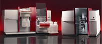
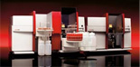
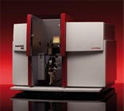

Атомно-абсорбционные спектрометры
Атомно-абсорбционные спектрофотометры марки Analytik Jena AG — это широкий выбор приборов: отдельно с
пламенным, электротермическим атомизаторами и их комбинацией в одном приборе, которые способны решать любые
задачи вашей аналитической лаборатории, обладая для этого исключительными функциональными возможностями.
Это и прямой анализ твердых проб, и методика «интеллектуального» разбавления, поперечный нагрев графитовой
кюветы и сочетание гидридного метода с электротермической атомизацией (методика HydrEA). А с началом выпуска
новой серии ContrAA, Analytik Jena устанавливает новые стандарты в атомно-абсорбционной спектрометрии- теперь
не нужны отдельные лампы с полым катодом для каждого элемента и не требуется коррекция фона!
Подкатегории:

Приборы серии contrAA — уникальные инновационные атомно-абсорбционные спектрометры с источником сплошного спектра - ксеноновой лампой, спектр излучения которой непрерывен в спектральном диапазоне 190 нм - 900 нм, что даёт возможность наблюдать атомный спектр поглощения всех элементов, обычно определяемых методом атомно-абсорбционной спектрометрии. Селективность метода обеспечивается использованием двойного Эшелле-монохроматора и CCD-детектора. Разрешение линий 2 пм.

Приборы серии novAA для одноэлементного последовательного атомно-абсорбционного анализа с пламенной, электротермической и гидридной техниками атомизации и дейтериевой коррекцией фона. Спектрометры novAA сочетают в себе уникальную производительность, универсальность, автоматизацию, надежность и гибкость.